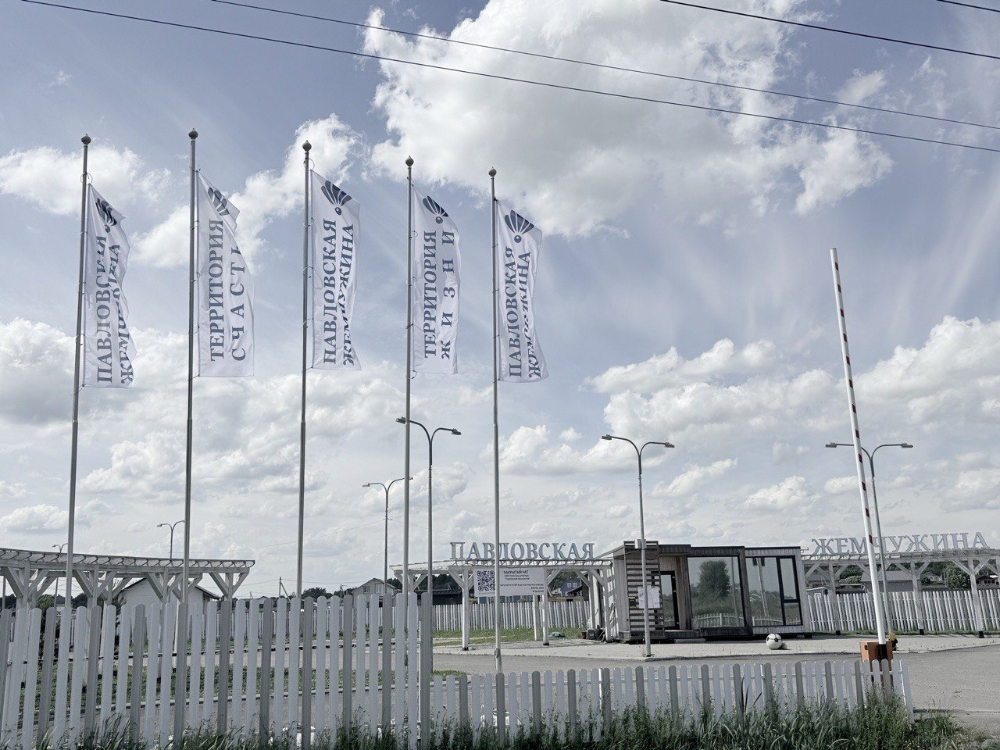
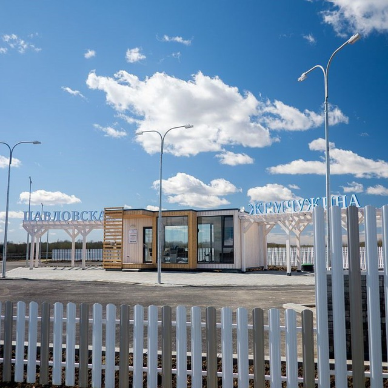
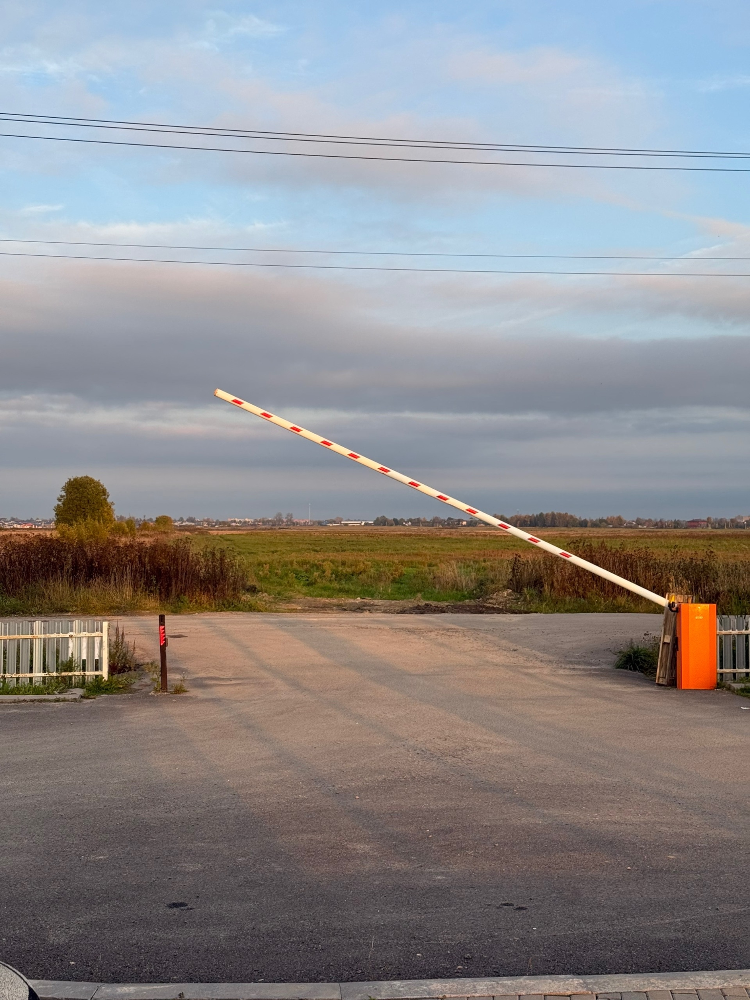
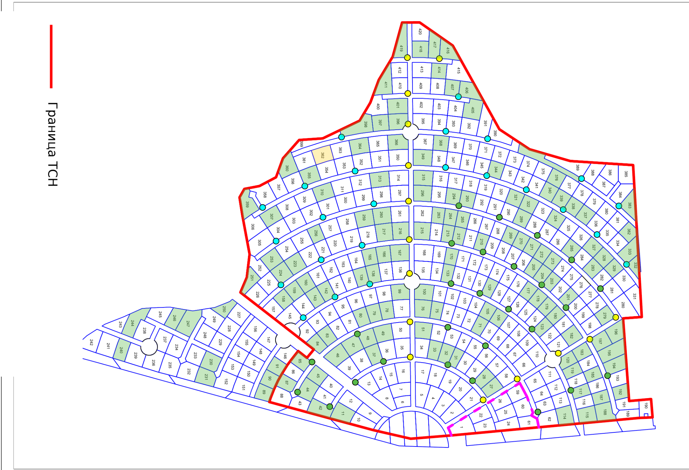
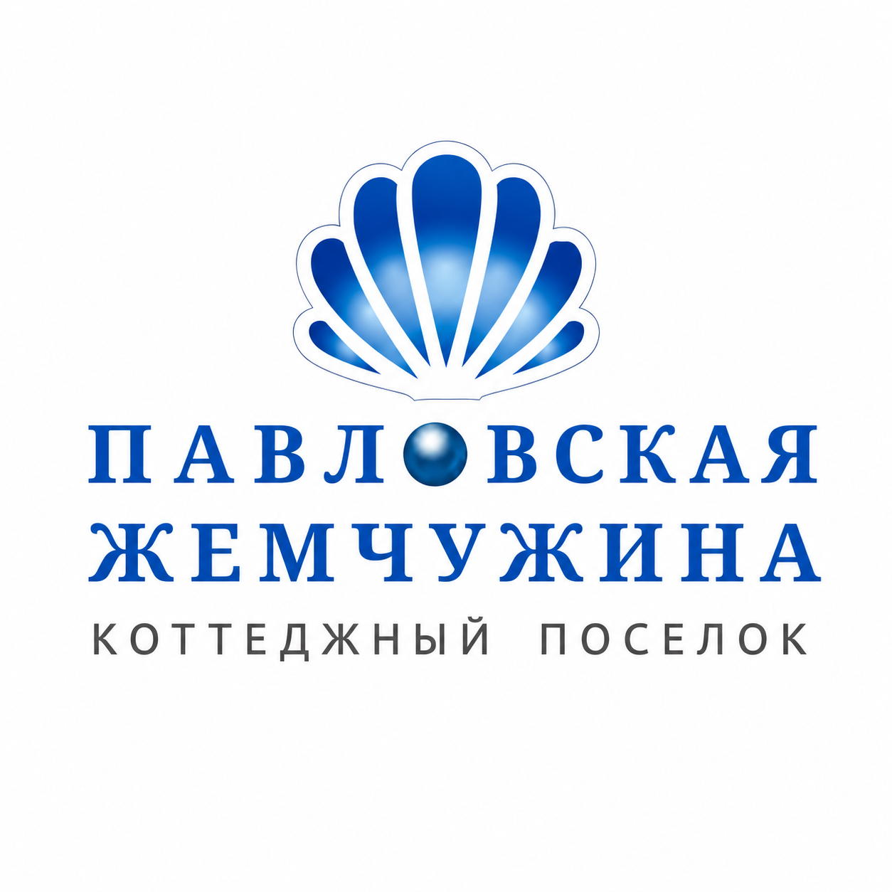
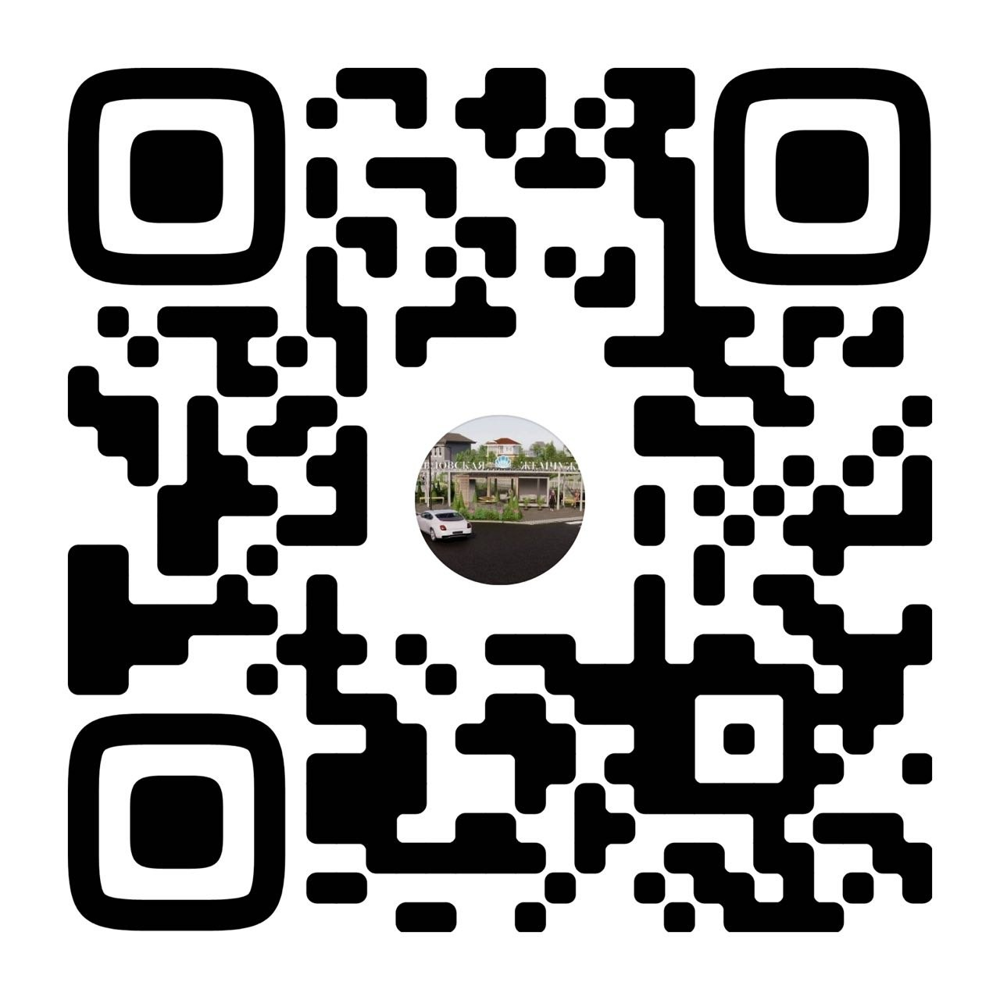
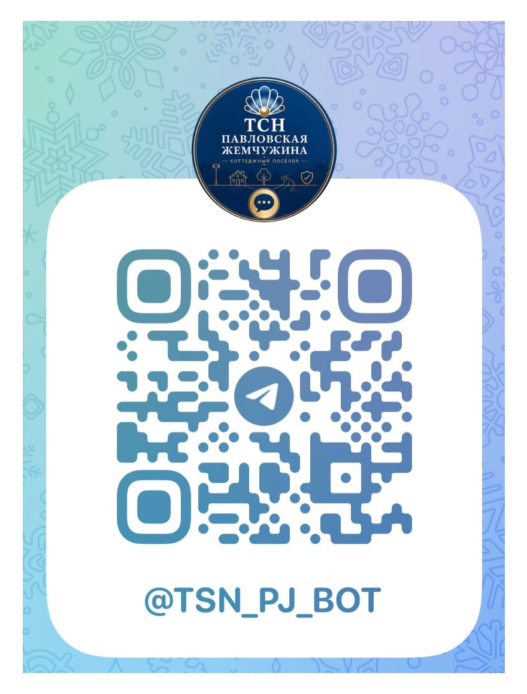

Товарищество работает как самостоятельная организация собственников.

Официальный сайт товарищества собственников недвижимости
Павловская
Жемчужина
Основные новости, вход в «Управу», документы, контакты и полезная информация для жителей — в одном месте.
О ТСН
Сайт для жителей посёлка
ТСН «Павловская Жемчужина» — товарищество собственников недвижимости, созданное для управления общим имуществом, содержания территории и решения вопросов, которые напрямую влияют на жизнь посёлка. ТСН — это не СНТ: организационно-правовая форма и порядок управления отличаются. На сайте собрана основная информация для собственников: новости, доступ в «Управу», реквизиты, оплата, документы и контакты.
Адрес КП: 188348, Ленинградская область, Гатчинский муниципальный округ, коттеджный посёлок Павловская жемчужина.

Размер утверждён общим собранием. Начисление ведётся с августа 2026 года.
На въездной группе организовано круглосуточное дежурство.
Через «Управу» можно перейти к начислениям и личной информации по участку.
Жителям
Самое нужное — без поиска по чатам
Собрали основные действия и ответы, которые чаще всего нужны собственникам.
Управа и начисления
Личный кабинет «Управы» — основная точка входа для просмотра начислений. Сайт «Управы» открывает страницу авторизации.
Открыть «Управу» →Как оплатить взносы
Счета формируются ежемесячно 1 числа. Зайдите в «Управу», проверьте начисление и оплатите выставленный счёт. Если нет доступа, обратитесь в Правление.
Перейти к оплате →Шлагбаум и охрана
Собственник открывает шлагбаум звонком с номера, заранее внесённого в базу. Для гостей и доставки въезд организует собственник.
Шлагбаум: +7 921 415-92-42Охрана: +7 921 415-92-43Документы и формы
На сайте размещаются базовые документы и формы. Протоколы собраний здесь не публикуются: собственники смогут смотреть их в личном кабинете «Управы».
Перейти к документам →Новости
Что происходит в посёлке

Въездная группа
Шлагбаум работает
Старые списки МЛД не действуют. Доступ работает только для телефонных номеров, внесённых в базу по заявлению собственника.
- Открытие звонком с зарегистрированного номера
- Гостям, такси и обычной доставке открывает собственник
- Грузовой въезд — через охрану
Карта ТСН
Границы территории и схема участков
В этом блоке используется карта в виде изображения. Красной линией показана граница ТСН.

Документы
Полезные формы и инструкции
В этом разделе собраны документы, которые чаще всего нужны собственникам: заявления, памятки и инструкция по работе с «Управой».
DOCXЗаявление на шлагбаумСкачать бланк для внесения номеров в базу шлагбаума
DOCXЗаявление о вступлении в ТСНСкачать форму для вступления в члены ТСН
DOCXЗаявление на проезд строителейВременный допуск строителей и подрядчиков
DOCXИнструкция по «Управе»Скачать подробную инструкцию по регистрации и оплате
Важно по заявлению на шлагбаум
Согласие на обработку персональных данных нужно от владельца каждого номера телефона, который указывается в заявлении на шлагбаум.
Как зарегистрироваться и оплатить через «Управу»
- Получите письмо на e-mail. На почту, указанную в заявлении, приходит ссылка на регистрацию на портале «Управа».
- Зарегистрируйтесь на портале. Перейдите по ссылке из письма, введите e-mail как логин и задайте пароль. Входить в «Управу» рекомендуется без VPN.
- Пополните лицевой счёт. В разделе «Главная» нажмите «Пополнить баланс», укажите сумму и сохраните счёт. После этого в разделе «Счета» можно скачать QR-код или распечатать квитанцию.
- Оплатите ежемесячный счёт. В начале месяца счёт появляется в разделе «Счета». Его можно оплатить по QR-коду или кнопкой «Оплатить с ЛС», если вы заранее пополнили лицевой счёт.
- Проверьте оплату. После оплаты информация отобразится в разделе «Платежи».
Частые вопросы
Коротко о том, что спрашивают чаще всего
Обратная связь
Есть вопрос Правлению?
Оставьте обращение. На финальном этапе подключим отправку обращения на официальную почту ТСН.
Сейчас это демонстрационная форма.
Она показывает, как будет выглядеть раздел, но пока не отправляет данные.
Она показывает, как будет выглядеть раздел, но пока не отправляет данные.
Покупающим участок
Покупаете участок в «Павловской Жемчужине»?
Перед сделкой лучше заранее проверить не только документы на землю, но и правила пользования общей инфраструктурой посёлка. Так новый собственник сразу понимает, как устроены платежи, доступ и взаимодействие с ТСН.
Проверьте участок
- актуальную выписку ЕГРН и право собственности продавца;
- кадастровый номер и границы участка;
- наличие задолженности продавца перед ТСН и действующие договорённости по пользованию общим имуществом;
- фактический доступ к участку и подключение коммуникаций.
Сообщите о смене собственника
- свяжитесь с Правлением и передайте актуальные данные собственника;
- получите доступ в личный кабинет «Управы»;
- оформите доступ к шлагбауму;
- ознакомьтесь с Уставом, правилами и порядком оплаты.
Вступить в ТСН
Членство даёт собственнику право участвовать в общих собраниях и голосовать по вопросам управления общим имуществом и развития посёлка.
Если вы только планируете покупку, можно заранее написать Правлению и уточнить важные детали по конкретному участку.
Задать вопрос Правлению
Контакты
ТСН «Павловская Жемчужина»
Адрес КП188348, Ленинградская область, Гатчинский муниципальный округ, коттеджный посёлок Павловская жемчужина
Приём в офисесуббота, 13:00–16:00
Личный кабинетe-uprava.ru
Шлагбаум+7 (921) 415-92-42
Охрана+7 (921) 415-92-43
НовостиВКонтакте
Официальный каналMax
Электронная почтаpavlov_pearl@mail.ru
Контакты
Все официальные каналы связи
Выберите удобный способ: ВКонтакте, Max, закрытый Telegram-чат, электронная почта или личный кабинет «Управы».

Группа ВКонтакте
Официальные новости и объявления ТСН.
Открыть группу →Канал в Max
Официальный канал ТСН «Павловская Жемчужина» в Max.
Открыть канал →
Закрытый Telegram-чат
Вход для собственников через бот проверки доступа.
Открыть @TSN_PJ_BOT →Электронная почта
Для обращений и официальной переписки.
pavlov_pearl@mail.ru →Личный кабинет
Начисления и информация по участку в «Управе».
Открыть «Управу» →